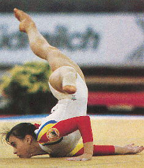

Aurelia Dobre (ROM)
1987 World AA Champion

Medal Total
- Olympic Games: 1 Silver
- World Championships: 3
Gold, 1 Silver, 2 Bronze
Aurelia was born on November 16,
1972 in Bucharest. She trained at Cetate Deva. Her most successful
competition was the 1987 World Championships in Rotterdam. There she won
the all-around title (the first Romanian woman to do so) and finished first on
beam. Unfortunately, she had knee surgery prior to the 1988 Olympics so
she was unable to make much of an impact. Today, Aurelia lives in Maryland
and is married to gym club owner Boz Mofid. They have 4 sons.
Competition Results
- 1981
Jr. Romanian Championships: 3rd V, 5th UB (Category IV)
- 1982
Bucharest v. Moscow: 1st Team, 3rd AA
Capital Cup: 1st Team, 1st UB
Jr. Romanian Championships: 1st AA (Category III)
Romanian Cup: 3rd UB (Category IV)
1983
City of Popes Jr. International: 8th AA
Dinamo Championships: 1st V, 1st FX
Jr. Balkan Championships: 1st Team, 2nd AA
- Jr. ROM-GDR Dual Meet: 1st Team, 1st AA
Jr. Romanian Championships: 1st AA, 1st UB (Category II)
Romanian Championships: 1st Team, 3rd AA (Category II)
-
- 1984
Avignon International: 5th AA, 1st UB
Jr. Friendship Tournament (Druzhba): 2nd Team,
6th FX
Jr. ROM-BUL Dual Meet: 1st Team, 3rd AA
Jr. Romanian Championships: 1st Team, 2nd B, 3rd UB
- Moscow News: 4th AA, 5th UB, 7th FX
- Riga International: 4th AA, 5th B, 5th
FX, 7th UB
Romanian Cup: 2nd AA, 1st UB, 1st FX (Category I)
-
- 1985
- Avignon International: 2nd AA, 1st UB, 3rd FX
Dinamo Championships: 3rd Team, 1st UB, 1st B, 3rd FX
- Intl. Junior Championships: 3rd AA, 1st B, 2nd UB, 3rd
V
- Jr. Balkan Championships: 1st Team, 1st AA, 1st UB, 1st B, 1st FX, 2nd V
- Jr. Friendship Tournament (Druzhba): 2nd
Team, 11th AA, 3rd B
Romanian Championships: 3rd B
-
- 1986
- Avignon International: 1st AA, 1st B, 1st FX
- Jr. European Championships: 3rd AA, 1st V, 1st UB, 2nd
B
- Jr. FRA-ROM Dual Meet: 1st Team, 1st AA, 1st UB, 1st B, 1st FX, 2nd V
ROM Championships: 2nd AA, 1st V, 3rd UB, 3rd FX
- ROM-TCH Dual Meet: 1st Team, 2nd AA
-
- 1987
- Chunichi Cup: 4th AA, 1st V, 1st B, 3rd FX
- Dinamo Championships: 1st Team. 1st AA, 1st V, 1st UB, 1st B, 1st FX
Romanian Championships: 2nd AA, 1st V, 3rd UB, 3rd FX
SUI-ROM Dual Meet: 1st Team, 1st AA
- World Championships: 1st Team, 1st AA, 1st B,
3rd V, 3rd FX, 4th UB
-
- 1988
- Chunichi Cup: 6th AA, 4th V, 4th UB, 8th FX
- DTB Cup: 6th AA, 6th V, 6th B, 6th FX
- Olympic Games: 2nd Team, 6th AA, 7th
UB
- Tokyo Cup: 2nd V, 2nd B
-
- 1989
- Rome Grand Prix: 3rd AA, 1st UB
- World Championships: 2nd Team, 36th AA
(prelims)
-
- 1991
- World Professional Championships: 7th FX
This page was last updated on November 05, 2005 and was last updated on
June 15, 2026.
© Gymn Forum